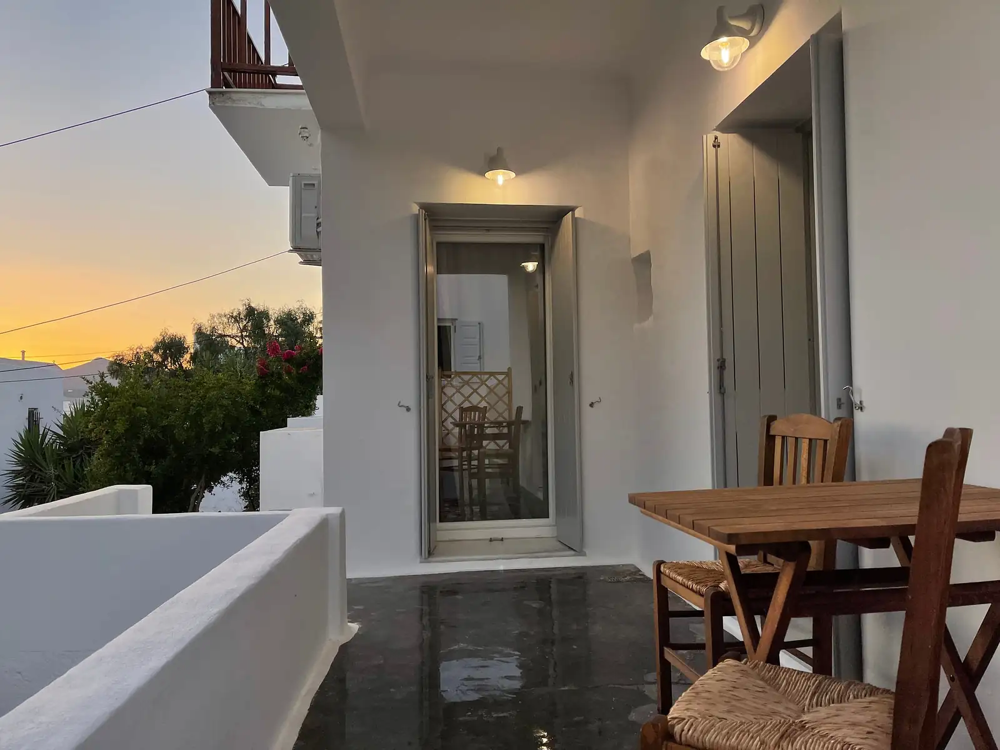
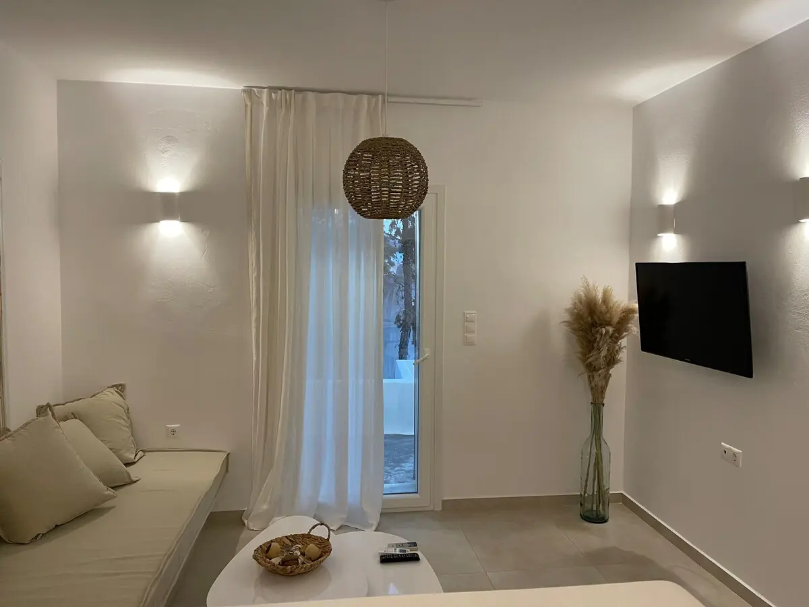

Το σαλόνι
Κυκλαδίτικο σαλόνι με χτιστό καναπέ, λινά μαξιλάρια και τη χαρακτηριστική καμάρα που το ενώνει με την τραπεζαρία. Τηλεόραση 39″, κλιματισμός, μπαλκονόπορτα με φως όλη μέρα.

Ένα λευκό σπίτι, λίγα σκαλιά πάνω από τη Νάουσα.
Κυκλαδίτικο σπίτι δύο επιπέδων για έως τέσσερις επισκέπτες, με δύο υπνοδωμάτια, δύο μπάνια και βεράντα για το ηλιοβασίλεμα — 5 λεπτά με τα πόδια από το κέντρο του χωριού και το λιμάνι.
Το Constantza’s House είναι ένα καινούργιο, ευρύχωρο κυκλαδίτικο σπίτι στη Νάουσα της Πάρου. Είναι φτιαγμένο για τέσσερις: δύο υπνοδωμάτια με παράθυρα και μεγάλες ντουλάπες, δύο μεγάλα μπάνια, σαλόνι με χτιστό καναπέ — και μια κουζίνα που βρίσκεται στο δικό της επίπεδο, λίγα σκαλιά πιο πάνω.
Βρίσκεται σε μια ήσυχη, παραδοσιακή γειτονιά όπου μένουν ντόπιοι, κι όμως όλα είναι με τα πόδια: η κεντρική στάση του λεωφορείου είναι λίγα βήματα πιο κάτω και τα λευκά σοκάκια, τα καφέ και το λιμάνι της Νάουσας, τέσσερα με πέντε λεπτά. Οι επισκέπτες το περιγράφουν ξανά και ξανά με τον ίδιο τρόπο: κεντρικό, κι όμως ήσυχο
.

Κυκλαδίτικο σαλόνι με χτιστό καναπέ, λινά μαξιλάρια και τη χαρακτηριστική καμάρα που το ενώνει με την τραπεζαρία. Τηλεόραση 39″, κλιματισμός, μπαλκονόπορτα με φως όλη μέρα.
Δύο υπνοδωμάτια με παράθυρα και μεγάλες ντουλάπες: το ένα με διπλό κρεβάτι και τουαλέτα με καθρέφτη, το άλλο με δύο μονά κρεβάτια — ιδανικό για δύο ζευγάρια ή μια οικογένεια.
Η κουζίνα είναι το ξεχωριστό κομμάτι του σπιτιού: βρίσκεται σε δικό της επίπεδο, λίγα σκαλιά πάνω από τους υπόλοιπους χώρους. Φούρνος, ηλεκτρικές εστίες, ψυγείο, φούρνος μικροκυμάτων, βραστήρας και ό,τι χρειάζεστε για να μαγειρέψετε.
Δύο μεγάλα μπάνια με ντουζιέρα — το ένα στο κάτω επίπεδο και το δεύτερο ψηλότερα, δίπλα στην κουζίνα. Σεσουάρ, σαμπουάν, αφρόλουτρο και ζεστό νερό.
Ασβεστωμένα πεζούλια, ξύλινο τραπέζι και καρέκλες με ψάθα: η βεράντα μπροστά στο σπίτι είναι το σημείο για τον πρωινό καφέ και το ποτό του σούρουπου.
Φως από δύο πλευρές, λευκές κουρτίνες που κινούνται με τον αέρα και ψάθινα φωτιστικά. Ο χτιστός καναπές χωράει άνετα και τους τέσσερις.
Στρογγυλό τραπέζι για τέσσερις, κάτω από την καμάρα, με τη μακραμέ διακόσμηση που έχει κάθε κυκλαδίτικο σπίτι που σέβεται τον εαυτό του.
Πλήρως εξοπλισμένη, με πάγκο από ξύλο, μεγάλο ψυγείο και καφέ για το πρώτο πρωινό.
Διπλό κρεβάτι με ψάθινο χαλί και τουαλέτα με καθρέφτη στο ένα· δύο μονά κρεβάτια δίπλα στο παράθυρο στο άλλο. Σεντόνια και πετσέτες περιλαμβάνονται.
Ντουζιέρα με γυάλινο τοίχο, πλακάκι σε γήινους τόνους· και η ξύλινη πόρτα που σας καλωσορίζει, με τα σκαλάκια προς το πάνω επίπεδο.

Ασβεστωμένα σκαλιά, πέτρινος κήπος με γιούκες, φανάρι σε κάθε πόρτα — και η βεράντα μπροστά στο σπίτι, με τραπέζι για τον πρωινό καφέ και το ποτήρι κρασί του βραδιού.
Από τη μία πλευρά τα λευκά σπίτια της Νάουσας και οι λόφοι πίσω τους· από την άλλη, η πέτρα και οι αγαύες του μικρού εσωτερικού κήπου.
Τα λευκά σοκάκια κατηφορίζουν ως το παλιό λιμάνι, όπου τα ψαροκάικα και οι ταβέρνες δίπλα στο νερό στήνουν ακόμη το σκηνικό. Αφήνετε το αυτοκίνητο — και δεν σας λείπει.
Ήσυχη, παραδοσιακή γειτονιά με ντόπιους κατοίκους
Λίγα βήματα — για Παροικιά, παραλίες και όλο το νησί
Λευκά σοκάκια, καφέ, μαγαζιά και ταβέρνες
Ψαροκάικα, ουζερί δίπλα στο νερό, το βενετσιάνικο κάστρο
Η πιο κοντινή αμμουδιά, πίσω από το λιμάνι
Στο σπίτι φτάνετε με τα πόδια: από σκαλάκια από τη μία πλευρά ή από ένα ανηφορικό δρομάκι από την άλλη. Ο Χάρης σάς λέει πού να αφήσετε το αυτοκίνητο.
Η κουζίνα και το ένα από τα δύο μπάνια βρίσκονται λίγα σκαλιά ψηλότερα από τους υπόλοιπους χώρους.
Το ένα υπνοδωμάτιο έχει διπλό κρεβάτι και το άλλο δύο μονά — ιδανικά για παιδιά, φίλους ή δεύτερο ζευγάρι που δεν πειράζεται να κοιμηθεί χωριστά.
Η αυλή και η βεράντα μπροστά στο σπίτι είναι κοινόχρηστες.
Κλιματισμός σε όλους τους χώρους· το σπίτι δεν έχει θέρμανση.
Οι αξιολογήσεις όπως δημοσιεύτηκαν στο Airbnb, στη γλώσσα των επισκεπτών — με την ελληνική απόδοσή τους.
This was one of the best places we stayed in Europe as 4x adults - don’t let the single beds put you off. We were pleasantly surprised when we arrived as I’m not sure the pictures quite do it justice. The accomodation was very spacious - split over two levels, was well equipped and clean. The only thing to note was we did find the single bed mattresses to be a little flat, the only minor downside, although this is simply personal preference. Harry was very responsive and helpful with lots of details about where to park and how to access the space. Our ferry was changed so we arrived much earlier than originally planned (~10:30am) and Harry kindly permitted us to check in at that time. It is a 5 minute walk into Naousa, this was a fantastic location and we’d happily be back again.
Ήταν από τα καλύτερα καταλύματα που μείναμε στην Ευρώπη, τέσσερις ενήλικες — μη σας αποθαρρύνουν τα μονά κρεβάτια. Ξαφνιαστήκαμε ευχάριστα μόλις φτάσαμε· δεν είμαι σίγουρος ότι οι φωτογραφίες το αποδίδουν. Πολύ ευρύχωρο, σε δύο επίπεδα, καλά εξοπλισμένο και καθαρό. Το μόνο που θα σημειώναμε είναι ότι τα στρώματα των μονών κρεβατιών μάς φάνηκαν λίγο σκληρά — μικρό μείον και θέμα προσωπικής προτίμησης. Ο Χάρης απαντούσε αμέσως και μας έδωσε πολλές λεπτομέρειες για το πού να παρκάρουμε και πώς να φτάσουμε στο σπίτι. Το πλοίο μας άλλαξε ώρα και φτάσαμε πολύ νωρίτερα (~10:30 π.μ.), και ο Χάρης μάς άφησε ευγενικά να κάνουμε check-in τότε. Είναι 5 λεπτά με τα πόδια από τη Νάουσα — φανταστική τοποθεσία, θα ξαναερχόμασταν ευχαρίστως.
We had a fantastic stay in this beautiful house - also thanks to Harry! He organised our transfers and gave us useful tips to rent scooters etc. He is very helpful and reactive - a truly great host. Perfect location in Naoussa, great decoration, very spacious and perfecly equipped. We can only recommend it and look forward to coming back next year!
Περάσαμε υπέροχα σε αυτό το όμορφο σπίτι — και χάρη στον Χάρη! Οργάνωσε τις μεταφορές μας και μας έδωσε χρήσιμες συμβουλές για ενοικίαση σκούτερ κ.ά. Πολύ εξυπηρετικός και άμεσος — πραγματικά εξαιρετικός οικοδεσπότης. Τέλεια τοποθεσία στη Νάουσα, ωραία διακόσμηση, πολύ ευρύχωρο και άψογα εξοπλισμένο. Το συστήνουμε ανεπιφύλακτα και ανυπομονούμε να ξαναέρθουμε του χρόνου!
We had a great stay in Naousa at Harry’s house. The house was spacious and in a great location, right near the main bus stop and only a 5 minute walk from the town and port area. Harry was very useful to offer suggestions of getting around the island and detailed instructions for checkin. Would highly recommend this stay!
Περάσαμε υπέροχα στη Νάουσα, στο σπίτι του Χάρη. Ευρύχωρο και σε εξαιρετική τοποθεσία, ακριβώς δίπλα στην κεντρική στάση του λεωφορείου και μόλις 5 λεπτά με τα πόδια από το χωριό και το λιμάνι. Ο Χάρης μάς βοήθησε πολύ με προτάσεις για να κινηθούμε στο νησί και με αναλυτικές οδηγίες για την άφιξη. Το συστήνουμε ανεπιφύλακτα!
This location is located very close to Naousa. It is easily less than 5 minutes from the port. It’s located well enough that you don’t hear noise and it’s close to so much. The amenities were great and we appreciated that he allowed us a slightly earlier check-in time since we were switching to a closer home.
Πολύ κοντά στη Νάουσα — άνετα λιγότερο από 5 λεπτά από το λιμάνι. Βρίσκεται σε τέτοιο σημείο που δεν ακούς θόρυβο, κι όμως είναι κοντά σε όλα. Οι παροχές ήταν εξαιρετικές και εκτιμήσαμε που μας επέτρεψε να κάνουμε check-in λίγο νωρίτερα.
Harry’s place was amazing! Great location, very clean and spacious. Only a 5 minute walk into town and close to beaches. We had a great stay!
Το σπίτι του Χάρη ήταν καταπληκτικό! Εξαιρετική τοποθεσία, πολύ καθαρό και ευρύχωρο. Μόλις 5 λεπτά με τα πόδια ως το χωριό και κοντά σε παραλίες. Περάσαμε υπέροχα!
My family and I so loved our stay at Constanta’s place!! The location was great, a very short walk to the bus stop and the main Naousa area. The house was beautiful and easy to find, and Harry was a very accommodating and communicate host. I would definitely recommend this place!
Η οικογένειά μου κι εγώ λατρέψαμε τη διαμονή μας στο σπίτι της Κωνσταντζας!! Υπέροχη τοποθεσία, λίγα βήματα από τη στάση του λεωφορείου και το κέντρο της Νάουσας. Το σπίτι ήταν όμορφο και εύκολο να το βρεις, και ο Χάρης πολύ εξυπηρετικός και επικοινωνιακός. Το συστήνω σίγουρα!
Harry was a great host. Would stay here again. He was checking in on us and supplied us with everything we needed. Everything was beautiful and well kept. Perfect location!
Ο Χάρης ήταν εξαιρετικός οικοδεσπότης. Θα ξαναμέναμε εδώ. Ενδιαφερόταν συνεχώς για εμάς και μας έδωσε ό,τι χρειαζόμασταν. Όλα ήταν όμορφα και περιποιημένα. Τέλεια τοποθεσία!
Absolutely recommend this place for newcomers to Paros. Location is perfect, it feels like a home away from home.
Το συστήνω ανεπιφύλακτα σε όσους έρχονται πρώτη φορά στην Πάρο. Η τοποθεσία είναι τέλεια — νιώθεις σαν στο σπίτι σου.
Superhost εδώ και τέσσερα χρόνια, απαντά στο 100% των μηνυμάτων, συνήθως μέσα σε λίγες ώρες. Μιλά ελληνικά και αγγλικά, σας στέλνει αναλυτικές οδηγίες πριν φτάσετε και βοηθά με μεταφορές, ενοικίαση σκούτερ και συμβουλές για το νησί.
“He organised our transfers and gave us useful tips to rent scooters.”Sacha, Geneva
Ο Χάρης φιλοξενεί και στη ΛέσβοDoreen’s House · Μυτιλήνη
Διαλέξτε ημερομηνίες και επισκέπτες: ανοίγει η σελίδα του σπιτιού στο Airbnb με τις ημερομηνίες σας, για να δείτε την ακριβή τιμή και να κάνετε κράτηση με την ασφαλή πληρωμή του Airbnb.
Το Constantza’s House είναι κυκλαδίτικο σπίτι διακοπών δύο επιπέδων στη Νάουσα της Πάρου (844 01), για έως 4 άτομα: 2 υπνοδωμάτια (ένα διπλό και δύο μονά), 2 μπάνια με ντουζιέρα, πλήρης κουζίνα σε δικό της επίπεδο, βεράντα, Wi-Fi και κλιματισμός. 4–5 λεπτά με τα πόδια από το κέντρο και το λιμάνι της Νάουσας, περίπου 15 λεπτά από την παραλία Πιπεράκι· χωρίς πρόσβαση αυτοκινήτου ως την πόρτα. Άφιξη μετά τις 15:00 με κλειδοθήκη· οικοδεσπότης ο Χάρης, Superhost του Airbnb. Α.Μ.Α. 00001608614.
Σε μια ήσυχη, παραδοσιακή γειτονιά της Νάουσας στην Πάρο, 4–5 λεπτά με τα πόδια από το κέντρο του χωριού και το λιμάνι, και περίπου 15 λεπτά από την παραλία Πιπεράκι. Την ακριβή διεύθυνση και οδηγίες σάς τις στέλνει ο Χάρης μετά την κράτηση.
Έως 4. Υπάρχουν δύο υπνοδωμάτια — το ένα με διπλό κρεβάτι και το άλλο με δύο μονά — και δύο μπάνια με ντουζιέρα.
Όχι. Το σπίτι δεν έχει πρόσβαση με αυτοκίνητο: φτάνετε από σκαλάκια ή από ένα ανηφορικό δρομάκι. Ο Χάρης σάς εξηγεί πού να παρκάρετε πριν φτάσετε.
Η άφιξη γίνεται μετά τις 15:00, με αυτόνομο check-in από κλειδοθήκη. Αν το πλοίο σας φτάνει νωρίτερα, ρωτήστε τον Χάρη — όταν το σπίτι είναι έτοιμο, συχνά το κανονίζει.
Όχι απαραίτητα. Η κεντρική στάση του λεωφορείου είναι λίγα βήματα από το σπίτι και η Νάουσα γυρίζεται με τα πόδια. Ο Χάρης δίνει συμβουλές για μεταφορές και ενοικίαση σκούτερ.
Ναι. Υπάρχει παρκοκρέβατο για μωρό, πλυντήριο ρούχων και πλήρης κουζίνα, και το δεύτερο υπνοδωμάτιο με τα δύο μονά κρεβάτια ταιριάζει σε παιδιά.
Διαλέξτε ημερομηνίες και επισκέπτες στη φόρμα της σελίδας: ανοίγει η σελίδα του σπιτιού στο Airbnb με τις ημερομηνίες σας, για να δείτε την τιμή και να κάνετε κράτηση με ασφάλεια.
Όχι. Δεν επιτρέπονται κατοικίδια, κάπνισμα (ούτε ηλεκτρονικό τσιγάρο), πάρτι ή εκδηλώσεις.